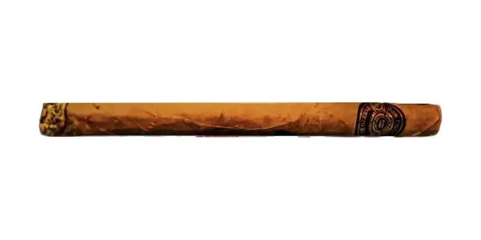

Don Collins (Quilambo, Corona, Churchill, Lonsdale, Pirámide)
By Don Collins Cigars · San Juan (Viejo San Juan), Puerto Rico
Handmade cigars with Puerto Rican tobacco; the 5-pack has one of each vitola.
- Vitolas: Quilambo, Corona, Churchill, Lonsdale, Pirámide
Sources: 1
See Don Collins (Quilambo, Corona, Churchill, Lonsdale, Pirámide) in the app, rate it and save it to Mi Hoja.